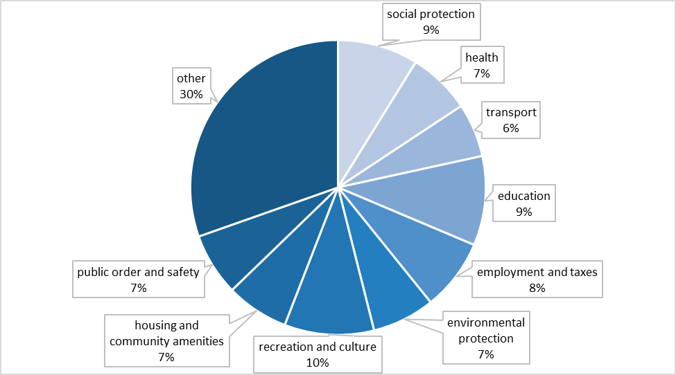
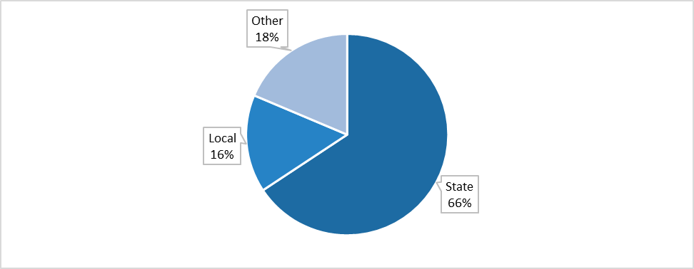
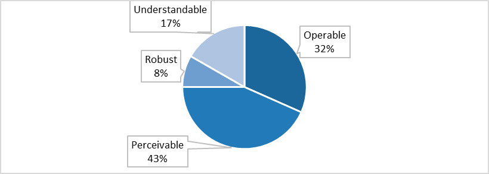
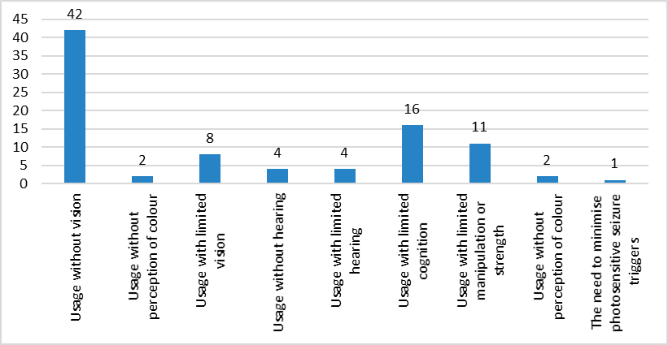
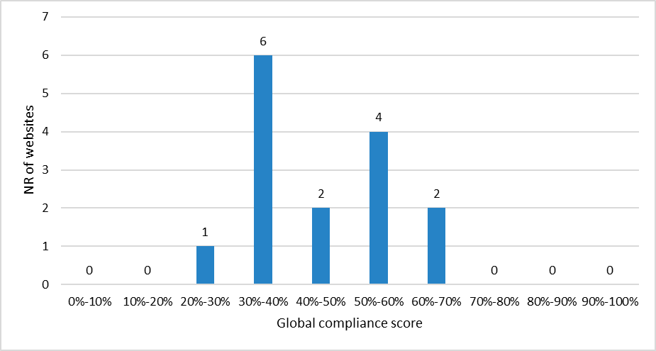
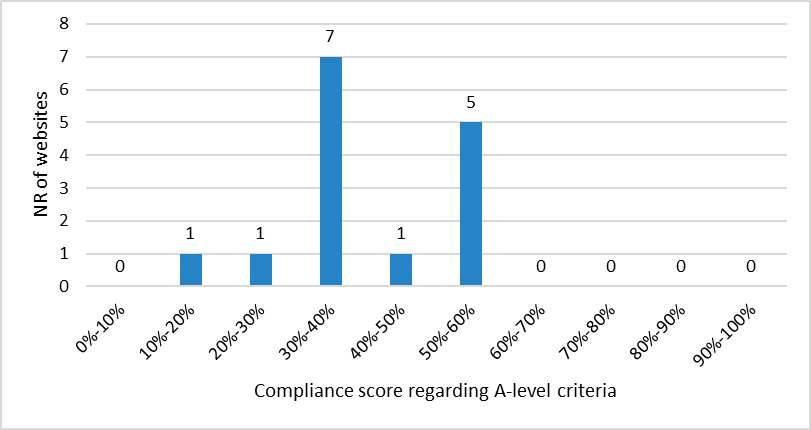
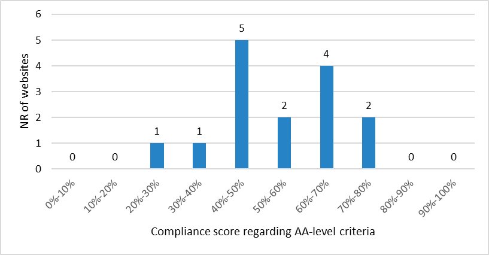
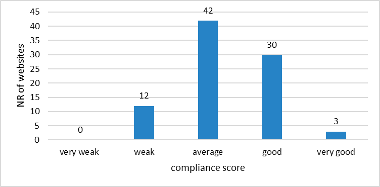
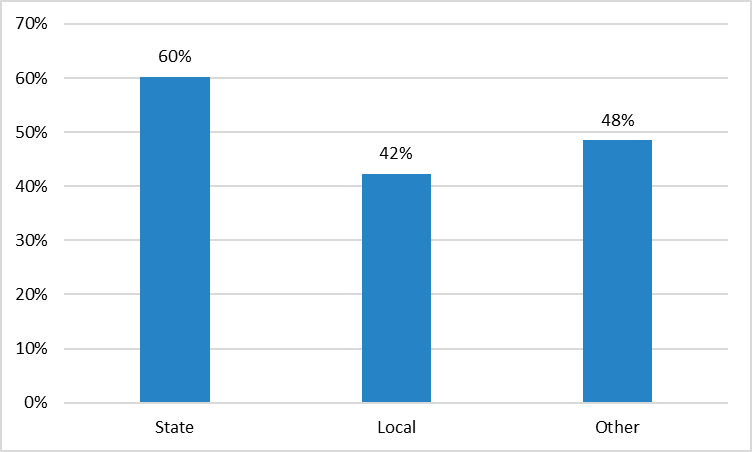
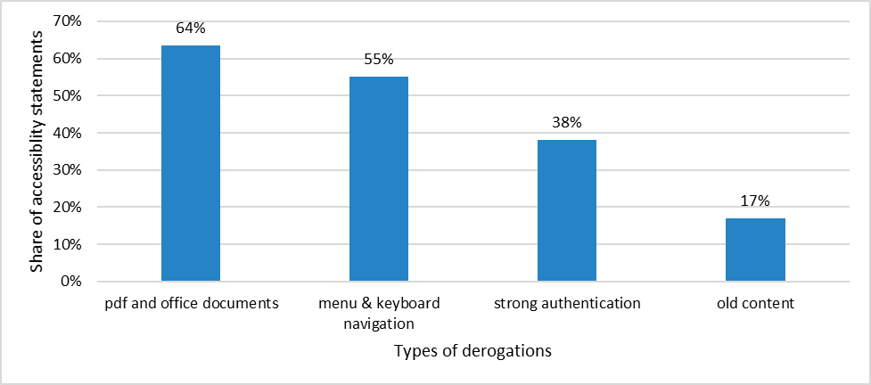

1. Executive summary
The Web Accessibility Directive has been transposed to Luxembourg’s legislation in the law of 28 May 2019. It obliges the public sector to improve the accessibility of its websites and mobile applications in order to respect the norms stipulated by the EU directive.
The Government’s information and press service (SIP – Service information et presse du gouvernement) is commissioned to periodically verify the websites and mobile applications within the scope of the law and to make sure that public sector organisms apply the legal rules in this matter. SIP also performs general information and awareness-raising activities, and provides training to public sector officials.
The auditing task consists of three parts: in-depth audits of websites, simplified audits of websites, and audits of mobile applications.
This report covers the period from 2020 to 2021 and is the first to be delivered in the scope of the directive. It describes the initial measures to implement a national auditing system as well as national reference frameworks for the evaluation of the accessibility of websites and mobile applications. During this period, SIP has performed 15 in-depth audits of websites, 87 simplified audits of websites, and 2 audits of mobile applications. For the in-depth monitoring, the average compliance score is 44%, and 55% for the simplified monitoring.
SIP is also in charge of managing complaints regarding digital accessibility compliance problems. During 2020 and 2021, 18 complaints have been received.
Multiple awareness activities have been put into place, including numerous days of specific training for public servants.
The complete documents about the auditing activity as well as the accessibility declarations and the complaints are published on Luxembourg’s open data portal:
2. Description of the monitoring activities
2.1. General information
In the current period (2020-2021), the monitoring activities have been performed between 27 August 2020 and 26 October 2021.
As stipulated in the law of 28 May 2019, the body in charge of the monitoring is the “Information and Press Service”, more specifically its division “Open Data and access to information” (e-mail address: accessibilite@sip.etat.lu).
The in-depth and mobile audits have been mostly outsourced to an external company specialised in digital accessibility, whereas the simplified audits have been taken care of internally.
The number of audited websites and mobile apps is based on the objectives set by the EU according to the population size of each country. For Luxembourg, in the first control period, these objectives resulted in the following figures:
15 in-depth audits of websites,
87 simplified audits of websites,
2 audits of mobile apps.
For each type of audit, it was necessary to define the websites or applications that should be part of the respective samples. For this purpose, and in collaboration with other governmental actors, a first step was made to build inventories of websites and applications owned by public sector bodies. For complete transparency, these documents were published on the national data portal. Based on these lists, samples were subsequently proposed by SIP with the objective of representing as much as possible the different governmental and administrative sectors and levels, as required in the commission implementing decision (EU) 2018/1524. The stakeholders of the handicap sector in Luxembourg were involved in this process, and their feedback was taken into account during the process (cf. section 5.1 Description of the mechanisms for consulting with relevant stakeholders on the accessibility of websites and mobile applications).
It is worthwhile noting that the sample slightly evolved during the control period as some websites went offline in the meantime or were merged into other existing websites. The corresponding websites were in those cases replaced in the sample by other websites from the same category whenever possible. Due to the size of the country, this was not always evident, because of the small numbers of sites available.

Figure 1: Public service sector coverage in the website sample (see description below)
Figure 1 description
All the categories of public services are covered and each of them represents between 7% and 10% of the websites in the sample (social protection: 9%, health: 7%, transport: 6%, education 9%, employment and taxes: 8%, environmental protection: 7%, recreation and culture: 10%, housing and community amenities: 7%, public order and safety: 7%). 30% of the websites do not fit in any of the categories proposed in EU 2018/1524 (for example websites of municipalities/cities).

Figure 2: Administrative levels of the websites in the sample (see description below)
Figure 2 description
Regarding the respective administrative levels, 66% of the sample websites are owned by a State level organisation, whereas the local (municipal) level provides 16% and other types of organisations, that are also affected by the accessibility law in Luxembourg, represent 19% of the sample.
In our inventory, we have not found any website at the regional level, which reflects the fact that in Luxembourg, the regional (canton, district) subdivisions of the territory are less visible. The local level websites included in the sample are all owned by major cities.
2.2. Composition of the sample
Our sample is available as Open Data on Luxembourg’s Open Data Portal.
The composition of the sample can be described as follows:
Total number of websites and mobile applications included in the sample: 104
Number of websites monitored using the simplified monitoring method: 87
Number of websites and mobile apps monitored using the in-depth monitoring method: 17
Number of monitored websites per administrative levels
State websites: 67
Regional websites: 0
Local websites: 16
Websites of bodies governed by public law not belonging to categories (a) to (c): 19
Number of websites from the respective sectors, as retained in the sample:
social protection: 9
health: 7
transport: 6
education: 10
employment and taxes: 8
environmental protection: 7
recreation and culture: 10
housing and community amenities: 7
public order and safety: 7
Other: 31
Distribution of the sample for mobile applications across the different operating systems
iOS: 1
Android: 1
2.3. Correlation with the standards, technical specifications and tools used for monitoring
2.3.1. In-depth monitoring method for websites
Our in-depth monitoring method is based on the one defined in RGAA 4.1 (General Framework for the Improvement of Web-Accessibility, in French “Référentiel Général d’Amélioration de l’Accessibilité web”), the accessibility framework defined by the DINUM in France, which has been slightly adapted to the Luxembourgish law. It is important to note that no usability tests were involved in the in-depth monitoring, but only accessibility tests.
The RGAA technical method provides an operational framework for verifying compliance with accessibility requirements. It includes 106 control criteria including an average of 2.5 tests per criterion. Some tests refer to implementation techniques (HTML, CSS, JavaScript ...) and are very precisely defined in order to reduce the margin of interpretation regarding the compliance with the norm EN 301 549.
RGAA 4.1 fully supports the requirements identified in the EU norm EN 301 549 v 2.1.2 as described in the mapping table available in Annexe 1: Mapping RGAA 4.1 / EN 301 549 v2.1.2 / WCAG 2.1.
In this method, a sample of pages is evaluated against RGAA criteria. The respective website sample usually contains the following pages when they exist:
the home page
the legal notice
the authentication page
the contact page
the "accessibility" page
the "help" page
the "site map" page
at least one relevant page for each type of service provided and any other main intended use (e.g.: 1st level headings in the tree structure), including the search functionality
at least one relevant downloadable document, if applicable, for each type of service provided and for any other primarily intended use
all the pages constituting a process (for example, an entry form or a transaction on several pages)
examples of pages having a distinct appearance or presenting a different type of content (e.g. page containing data tables, multimedia elements, illustrations, forms, etc.).
The selection of the audited pages as well as their number must be representative of the site. Finally, there are pages selected at random representing at least 10% of the elements of the sample described above.
Some of the criteria of RGAA, mainly linked to the evaluation of the accessibility of rich user interface components based on JavaScript, have been tested with different combinations of screen readers and web browsers, as described in the testing environment of RGAA. These tests have been performed on desktop and mobile devices with combinations among the following:
| Assistive technology | Browser |
|---|---|
| NVDA (latest version) | Firefox |
| JAWS (previous version) | Firefox or Internet Explorer |
| VoiceOver (latest version) | Safari |
| Assistive technology | Browser |
|---|---|
| JAWS (previous version) | Firefox |
| NVDA (latest version) | Firefox or Internet Explorer |
| VoiceOver (latest version) | Safari |
| Operating system | Assistive technology | Browser |
|---|---|---|
| iOS | VoiceOver (latest version) | Safari |
| Operating system | Assistive technology | Browser |
|---|---|---|
| Android | Talkback (latest version) | Chrome |
The (non-normative) test method of RGAA recommends a set of tools for the audits:
WCAG Color Contrast Checker for Chrome or WCAG Color Contrast Checker for Firefox
PAC: PDF Accessibility Checker
PEAT: Photosensitive Epilepsy Analysis Tool
Note: Using these tools is not required by the framework.
2.3.2. Simplified monitoring method for websites
Our simplified monitoring method is directly built on top of RGAA and it uses semi-automated tests whenever possible, as proposed in the commission implementing decision (EU) 2018/1524. The mapping between the criteria used in this method, the norm EN 301 549 and the requirements from (EU) 2018/1524 is available in Annexe 2: Mapping simplified method criteria / EN 301 549 / Principles and accessibility needs.
In this setup, only three pages are tested, and the following are recommended:
The home page
One page containing a form (for example the contact page)
One page with special content, like a video, a table, a complex image.
The recommended tools to execute this method are the following:
The tools recommended in the testing method of RGAA (see previous sections)
“nu HTML Checker” combined with the bookmarklet called “check for WCAG 2.0 parsing compliance” available on the about page of this service.
Apart from this, we have developed a tool called “simplA11yMonit” which performs checks from Axe and nu HTML Checker and prepares an evaluation grid for manual testing. But for a few exceptions (ex: RGAA criteria 2.1, 8.1), all automated tests are manually verified to avoid false positives. The evaluation grid is then read by another tool, “simplA11yGenReport”, which automatically generates a report from the evaluation grid. Moreover, in order to sensitize site owners to the accessibility of the document provided on the site, our third tool “simplA11yPDFCrawler” enables to crawl a subset of all available PDF documents on a given site, and their accessibility is evaluated with 6 simple automated checks (tagged document, protected document, scanned document, availability of a title, of bookmarks, of a default language). These automated checks do not constitute tests for a criterion per se but they give a global idea of the general accessibility of PDF documents on a given website.
No usability tests were involved in the simplified monitoring, only accessibility tests.
In this method, 50% of the criteria defined in RGAA are evaluated. They cover the overall requirements of websites to be perceivable, operable, understandable and robust, as referred to in Article 4 of Directive (EU) 2016/2102, and the user accessibility needs, as defined in (EU) 2018/1524, except for “usage without vocal capability” for the reason that the inventory contains no website requiring vocal interaction.

Figure 3: Simplified monitoring method, distribution of tests by requirements (see description below)
Figure 3 description
The simplified monitoring method covers all requirements referred to in Article 4 of Directive (EU) 2016/2102. Perceivable: 43 % of the tests, Operable: 32%, Understandable: 17%, Robust: 8%.

Figure 4: Simplified monitoring method, number of tests per user accessibility need (see description below)
Figure 4 description
The simplified monitoring method covers 9 accessibility needs defined in (EU) 2018/1524, with 42 tests for “usage without vision, 2 tests for “usage without perception of colour”, 8 tests for “usage with limited vision”, 4 tests for “usage without hearing”, 4 tests for “usage with limited hearing”, 16 tests for “usage with limited cognition”, 11 tests for “usage with limited manipulation or strength”, 2 tests for “usage without perception of colour”, 1 test for “the need to minimise photosensitive seizure triggers”.
2.3.3. Monitoring method for mobile apps
Luxembourg developed its reference framework for the accessibility evaluation of mobile applications. This framework is named RAAM 1 (“Référentiel d’évaluation de l’Accessibilité des Applications Mobiles“) and is heavily inspired by RGAA. It has been published under the Creative Commons Attribution licence, which enables its free reuse by other member states, organisations or companies.
As such, it is an operational framework for verifying compliance with accessibility requirements. Therefore, it enables to verify that a mobile application complies with the criteria described in European norm EN 301 549 v.3.2.1 for the following sections:
5 Generic requirements
6 ICT (Information and Communications Technology) with two-way voice communication
7 ICT with video capabilities
10 Non-web documents
11 Software
12 Documentation and support services
This framework contains 107 control criteria. The mapping between RAAM criteria and the norm EN 301 549 is described in Annexe 3: Mapping EN 301 549 – RAAM 1. Each control criterion is associated with a practical evaluation method for iOS and Android devices.
| Operating system | Screen reader |
|---|---|
| iOS latest version | VoiceOver latest version |
| Android latest version | Talkback latest version |
The (non-normative) test method included in RAAM recommends the following tools on top of the previously mentioned screen readers:
A physical keyboard
Accessibility Inspector for iOS
Accessibility Scanner on Android
No usability tests were involved in the monitoring of mobile apps, only accessibility tests.
3. Outcome of the monitoring
3.1. Detailed outcome
3.1.1. In-depth monitoring of websites
In this monitoring program, 15 websites have been controlled, with an average of 14 pages per website. The detailed results of the control are available in Annexe 4: Results of the in-depth monitoring of websites. Every in-depth audit has a compliance score. The corresponding scoring method is defined in RGAA as follows: it is obtained from the formula C/ (C+NC), where C is the number of compliant criteria on the sample of pages and NC is the number of non-compliant criteria on this sample. It is important to note that if a criterion is non-compliant on one page, then it is considered as well as non-compliant on all pages of the sample.

Figure 5: in-depth monitoring, global compliance score distribution (see description below)
Figure 5 description
In this sample, 1 website has a score between 20% and 30%, 6 between 30% and 40%, 2 between 40% and 50%, 4 between 50% and 60% and 2 between 60% and 70%.
The minimum score is 24% and the maximum is 62%, with an average of 44% (standard deviation: 11%). A website is considered as non-compliant if it scores under 50%, partially compliant if the result is between 50% and 100%, and fully compliant only at 100 %. We thus have here 9 non-compliant and 6 partially compliant websites.
In RGAA, criteria are also linked to the WCAG levels A and AA. Although the criteria from both levels are mandatory, the A-level criteria have more impact on the overall accessibility of a website, they should hence be remediated with a higher priority level.

Figure 6: in-depth monitoring, compliance score of A-level criteria. (see description below)
Figure 6 description
Regarding the compliance at the A-level, 1 website is between 10% and 20%, 1 between 20% and 30%, 7 between 30% and 40%, 1 between 40% and 50%, and 5 between 50% and 60%.

Figure 7: In-depth monitoring, compliance score of AA-level criteria. (see description below)
Figure 7 description
Regarding the compliance at the AA-level, 1 website is between 20% and 30%, 1 between 30% and 40%, 5 between 40% and 50%, 2 between 50% and 60%, 4 between 60% and 70% and 2 between 70% and 80%.
The compliance scores are globally better at the AA-level than at the A-level. A focus on solving A-level issues should be the priority of the public sector bodies for the next monitoring period.
Regarding non-compliance issues, 1410 of them have been found in total on the 15 websites. The following table presents their distribution among RGAA topics.
| RGAA topic | % of all non-compliance issues |
|---|---|
| Mandatory elements | 15% |
| Presentation of information | 14% |
| Forms | 14% |
| Colours | 12% |
| Information structure | 12% |
| Scripts | 8% |
| Images | 7% |
| Navigation | 6% |
| Links | 5% |
| Consultation | 4% |
| Tables | 2% |
| Frames | 1% |
| Multimedia | 1% |
The three topics with the most non-compliance issues are:
“Mandatory elements”, which encompass technical criteria like HTML code validity, presence of a default language, tagging of language changes when present, and avoiding HTML tags used only for presentation purposes.
“Presentation of information” with criteria like keyboard focus visibility, capacity to zoom without issues, capacity to adapt text properties.
“Forms” with all criteria related to forms like field labelling, error prevention and management.
The non-compliance can also be analysed at the criterion level.
| RGAA criterion | Ranking | Level | % of all non-compliance issues |
|---|---|---|---|
| 3.2 Text colour contrast | 1 | AA | 6% |
| 9.1 Titles hierarchy | 2 | A | 6% |
| 7.1 Accessible scripts | 3 | A | 6% |
| 8.7 Language changes | 4 | AA | 5% |
| 3.3 Non-text colour contrasts | 5 | A | 5% |
| 8.9 Tags used only for presentation purposes | 6 | A | 5% |
| 10.7 Visible focus | 7 | A | 4% |
| 1.2 Decorative image | 8 | A | 3% |
| 6.1 Explicit link | 9 | A | 3% |
| 9.2 Document structure | 10 | A | 3% |
This table shows that all criteria in this Top 10 except two are A-level criteria. The most common criterion is still related to text colour contrasts. Development teams together with content creators can solve most of these issues. To solve contrast issues in particular (ranks #1 and #5), the focus could be put during the next monitoring period on awareness activities targeting designers.
3.1.2. In-depth monitoring of applications
The objective set by the European Commission was to monitor two apps in 2021. This objective has been met during this period (cf. Annexe 5: Results of the in-depth monitoring of mobile applications). Both apps were non-compliant (47% and 41% of compliance). The number of apps being quite limited, it is impossible to provide as many statistics as in the previous section.
| RAAM topic | % of all non-compliance issues |
|---|---|
| Interactive components | 24% |
| Navigation | 16% |
| Forms | 14% |
| Information structure | 13% |
| Consultation | 11% |
| Colours | 10% |
| Presentation | 8% |
| Graphical elements | 3% |
| Multimedia | 0% |
| Tables | 0% |
| Mandatory elements | 0% |
| Documentation and accessibility features | 0% |
| Editing tools | 0% |
| Helpdesk | 0% |
| Real-time communication | 0% |
The two topics with the most non-compliant issues are:
“Interactive components”: the encountered problems in this topic are mostly about keyboard accessibility and compatibility with assistive technologies (e.g.: no accessible name, non-explicit accessible name, no state available to assistive technologies).
“Navigation”: the main problems were related to focus management and navigation order.
It is worthwhile noting that these two mobile applications do not support the landscape orientation, which seems to be a common and recurring issue.
3.1.3. Simplified monitoring of websites
In this monitoring program, 87 websites and 3 pages per website have been controlled. The detailed results of the control are available in Annexe 6: Results of the simplified monitoring of websites. In this regard, a scale of five compliance levels has been defined: very weak, weak, average, good, very good. They are based on the obtained score and represent evenly distributed percentage intervals.

Figure 8: simplified monitoring, global compliance score distribution
Figure 8 description
The global compliance score distribution is the following: 0 very weak, 12 weak, 42 average, 30 good, 3 very good.
The average compliance score is 55% (standard deviation: 13%). 36% of all websites monitored here obtained a score under 50%.

Figure 9: simplified monitoring, average compliance score per administrative level (see description below)
Figure 9 description
The average compliance per administrative level is the following: 60% for state websites, 42% for local websites and 48% for other organisations.
The good results of State websites compared to other administrative levels mainly reside in the fact that most of them have been developed by CTIE (“Centre des Technologies de l’Information de l’État”, the Government IT centre), which has more than 15 years of experience in digital accessibility, has developed its own best practices guide (“Renow”) and has set up processes, which include accessibility checks in the quality control circuit.
| Sector | average score |
|---|---|
| public order and safety | 68% |
| health | 64% |
| social protection | 63% |
| employment and taxes | 63% |
| transport | 60% |
| housing and community amenities | 58% |
| recreation and culture | 54% |
| environmental protection | 50% |
| education | 48% |
| other | 48% |
Regarding non-compliance issues, a total number of 1121 issues have been found on these 87 websites. The following table presents their distribution among RGAA topics:
| RGAA Topic | % of all non-compliance issues |
|---|---|
| Forms | 15% |
| Mandatory elements | 14% |
| Images | 12% |
| Colours | 11% |
| Navigation | 10% |
| Links | 10% |
| Scripts | 7% |
| Presentation of information | 6% |
| Information structure | 5% |
| Multimedia | 4% |
| Tables | 3% |
| Consultation | 2% |
| Frames | 2% |
The most non-compliant topics encompass “forms” and “mandatory elements” like in the results of the in-depth monitoring. The non-compliance can also be analysed at the criterion level.
| RGAA criterion | Ranking | Level | % of all non-compliance issues |
|---|---|---|---|
| 11.1 Form labels | 1 | A | 12% |
| 11.10 Error prevention | 2 | A | 12% |
| 7.3 Keyboard control of scripts | 3 | A | 7% |
| 3.1 Text colour contrasts | 4 | AA | 7% |
| 8.7 Language changes | 5 | AA | 7% |
| 6.1 Explicit links | 6 | A | 6% |
| 12.6 Landmarks | 7 | A | 6% |
| 8.2 HTML validation | 8 | A | 5% |
| 1.2 Decorative image | 9 | A | 5% |
| 6.2 Accessible name of a link | 10 | A | 4% |
The two most non-compliant criteria are related to forms. This over-representation of forms issues may be linked to the fact that for all sites, the sample of 3 tested pages contained at least one page with a form. As for the in-depth monitoring, the majority of criteria in this top 10 are related to A-level criteria.
3.2. Use of the disproportionate burden derogation
The context of disproportionate burden derogation is defined in Article 5 of the Directive (EU) 2016/2102 and has been transposed in article 4 of the Luxembourgish law of 28 May 2019.
When an organisation invokes this derogation for some contents or features, this should be mentioned in their accessibility statement. At the moment of finalizing this report, SIP was officially notified of the publication of 115 accessibility statements of websites and 3 of mobile applications among 637 websites and apps in the inventory. 19% of all websites and mobile applications in Luxembourg have an accessibility statement. Among these 118 accessibility statements, 67% have invoked a disproportionate burden derogation.

Figure 10: Most frequent types of disproportionate burden derogations in accessibility statements (see description below)
Figure 10 description
The four most common derogations found in accessibility statements are the following:
64% of all accessibility statements mention that not all PDF and office documents do conform to the accessibility norm. An accessible alternative will only be provided on request.
55% of all accessibility statements mention that navigation menus with submenus are not usable with a keyboard only, but the top-level menu items lead to a page containing the same links as the ones provided in the sub-menus.
38% of all accessibility statements mention that some parts of the website are behind a login with strong authentication provided by an independent external company.
17% of all accessibility statements mention that old content may contain certain types of accessibility issues. The organisation in charge of the website focuses on the accessibility of newly created content.
4. Use of the enforcement procedure and end-user feedback
SIP is in charge of proposing an online contact form for all persons wishing to submit a complaint regarding a non-compliance of a public sector body with the accessibility requirements, according to Article 7(2) of the Luxembourgish law of 28 May 2019 transposing the Web Accessibility Directive.
This accessibility complaint form is available since 26 June 2020 on the website of SIP.
When a complaint is submitted via this form, SIP acts as a mediator between the citizen and the public sector body by following this process:
Analysis of the complaint: is the complaint about digital accessibility? Is the object of the complaint within the scope of the law? Is the encountered issue reproducible?
Search for a contact person at the public sector body.
Send an e-mail to the public sector body. This e-mail informs about the legal framework, explains the complaint, confirms that the issue has been verified and reproduced, and informs about the legal timeframe of 1 month to react.
Exchange with the Public Sector Body, for example about possible solutions to the encountered issue.
Inform the user of the conclusions, as soon as a solution has been proposed.
In cases where the reported accessibility problems are out of the scope of the law of 28 May 2019, SIP informs the responsible organisation and gives feedback to the complainer, even if there is no legal obligation that has to be respected.
The Ombudsman can also act as a mediator according to the law and follow a similar procedure. At the moment of finalizing this report, no information was received from the Ombudsman concerning eventual complaints related to accessibility issues.
SIP has published as Open Data the anonymised list of complaints it managed during the period 2020-2021.
During this period, in total 18 complaints have been managed:
17 complaints were about 13 websites or mobile applications within the scope of the law, which represent 2 % of the inventory. 1 complaint was not within the scope of the law.
6 complaints led to an accessible solution: the citizen was provided with a solution to his precise problem, which could be realised on a short-term basis. This could either be the concrete correction of the problem on the site or an alternative functionality ensuring an equal service level. In case no solution could be provided to the citizen because it was considered this solution would imply a disproportionate financial burden or amount of work, the complainer still received feedback and help, even if the latter cannot be qualified as a “solution”.
4 complaints were considered by the public sector body as a disproportionate burden without any short-term solution.
2 complaints did not get any answer from the public sector body.
| Administrative level | NR of complaints |
|---|---|
| State | 13 |
| Local | 0 |
| Other | 5 |
The majority of complaints are about State online services.
| Sector | NR of complaints |
|---|---|
| Other | 7 |
| Transport | 5 |
| Social protection | 2 |
| Health | 2 |
| Recreation and culture | 1 |
| Employment and taxes | 1 |
The majority of complaints do not match the proposed list of sectors as defined in EU 2018/1524. The second most important sector regarding the number of complaints is the transport sector.
| Keyword | NR of complaints |
|---|---|
| App | 9 |
| PDF form | 5 |
| Various Web accessibility issues | 4 |
| Strong authentication | 2 |
| CAPTCHA | 1 |
| Paper-based process | 1 |
9 complaints have been submitted against 5 mobile apps. Inaccessible PDF forms are the second most frequent reason for complaint, with 5 complaints. It would be interesting here to address this point more globally by progressively replacing PDF forms with Web forms. A paper-based process was object of a complaint. Although this issue was not within the scope of the law, the competent public sector body has been informed.
5. Additional measures
5.1. Description of the mechanisms for consulting with relevant stakeholders on the accessibility of websites and mobile applications
The most important aspect in our approach to the stakeholders’ involvement was their consultation during the process to establish the test samples for the sites and applications to be included in the monitoring program. Hereafter is a summary of the process:
SIP created (and continuously updates) inventories of existing public sector websites and applications, and published these documents on the national open data portal to ensure transparency and to induce feedback.
The existence of these (draft and evolving) documents was announced via the common communication channels of the open data portal (article, Twitter).
The feedbacks by the stakeholders’ community were taken into account and led to several modifications of the inventories.
A first sample for the three monitoring programs was drafted based on these inventories taking into account the criteria specified by the implementing decision (EU) 2018/1524 and aiming at representing as well as possible all administrative sectors and levels. Other aspects taken into consideration while building the sample were criteria like statistics of use, importance level of the site/app for the general public or eventually planned updates.
The monitoring sample was published on the open data portal as well and underwent scrutiny by the stakeholders’ community. In an interactive process, the sample lists were subsequently adapted, without omitting the basic principles (and exclusions) stated by the law and the related execution rules.
5.2. Procedures to make public any developments in accessibility policy relating to websites and mobile applications
Regarding Luxembourg’s awareness-raising and publicity efforts, the following can be mentioned:
SIP’s accessibility staff is part of the interministerial committee on digitalisation, as well as of the interministerial working group on digital inclusion.
In SIP’s team, a legal expert is available to help with the legal aspects and corresponding popularisation and communication efforts.
Regularly scheduled training sessions and workshops are organised for the employees of the public sector, where also policy-related issues are communicated and discussed.
A considerable communication effort essentially happens formally via the dedicated accessibility website and in a continuous and more informal way via the social networks. It is also considered to eventually organise awareness-raising events, dedicated to audiences beyond the borders of public sector employees.
5.3. Experiences and findings from the implementation of the rules on conformity with the accessibility requirements
Void.
5.4. Information on training and awareness-raising activities
5.4.1. Training
SIP has developed an offer of training courses available at the National Institute of Public Administration (INAP). These training courses target the employees of the entire public sector of Luxembourg.
Here is the list of training courses, as they actually exist:
Digital accessibility at all stages of a project
Moreover, every public servant beginning a career at Luxembourg’s Government has to follow a mandatory training called “formation spéciale”. This training also contains a module about digital accessibility, which serves as a first introduction and advertises the other in-depth training offer.
| Training name | Type | Duration (hrs) | NR of sessions | Total NR of participants |
|---|---|---|---|---|
| Introduction to digital accessibility | Webinar | 16 | 5 | 48 |
| Accessibility of Office and PDF documents | Webinar | 16 | 2 | 35 |
| Digital accessibility at all stages of a project | E-learning | 12 | 12 | 23 |
| Digital accessibility for public servant interns “formation spéciale” | Webinar | 0.5 | 6 | 343 |
| Total | / | / | 25 | 449 |
During 2020-2021, 259 hours of training were given about digital accessibility. 106 persons followed the in-depth courses and 343 assisted to the 30 minutes introduction sessions.
5.4.2. Awareness actions
With regard to the communication channels, SIP’s accessibility team has set up a Twitter account in April 2020. In December 2021, this account had 267 followers. It has since proven to be the preferred way to communicate with the public on this topic. The message frequency is about one tweet per week.
Furthermore, a dedicated article on the Government’s website explains its commitment to digital accessibility in four languages.
A dedicated website, accessibilite.lu, has been set up to publish Luxembourg’s accessibility frameworks, general information about Luxembourg’s simplified evaluation method, as well as some tools like for example a form to help in writing an accessibility declaration. Between 1 August 2020 and 1 December 2021, this website registered 12691 page views, 7901 visits and 4091 unique visitors. Most of the visitors are coming from Luxembourg and France, which may be linked to the fact that the content is mainly written in French.
Another tool to be mentioned is the form for reporting complaints about digital accessibility issues, as required by Luxembourgish law.
In September 2021, a circular letter has been sent to all local governments (municipalities) and the communal syndicates in Luxembourg, informing them about the legal requirements concerning the digital accessibility of their websites.
Annexes
Annexe 1: Mapping RGAA 4.1 / EN 301 549 v2.1.2 / WCAG 2.1
Annexe 2: Mapping simplified method criteria / EN 301 549 / Principles and accessibility needs
| RGAA Topic | RGAA criterion | EN 301 549 | User accessibility needs | Principle | Tests |
|---|---|---|---|---|---|
| Images | 1.1 | 9.1.1.1 | Usage without vision | Perceivable | semi-automated & manual |
| Images | 1.2 | 9.1.1.1 | Usage without vision | Perceivable | semi-automated & manual |
| Images | 1.3 | 9.1.1.1 | Usage without vision | Perceivable | manual |
| Images | 1.4 | 9.1.1.1 | Usage without vision | Perceivable | manual |
| Images | 1.5 | 9.1.1.1 | Usage without vision | Perceivable | manual |
| Images | 1.6 | 9.1.1.1 | Usage without vision | Perceivable | manual |
| Images | 1.7 | 9.1.1.1 | Usage without vision | Perceivable | manual |
| Frames | 2.1 | 9.4.1.2 | Usage without vision | Robust | semi-automated |
| Colours | 3.1 | 9.1.4.1 | Usage without perception of colour | Perceivable | manual |
| Colours | 3.2 | 9.1.4.3 | Usage with limited vision | Perceivable | semi-automated & manual |
| Multimedia | 4.1 | 9.1.2.1 | Usage without hearing, Usage with limited hearing | Perceivable | manual |
| Multimedia | 4.2 | 9.1.2.3 | Usage without vision | Perceivable | manual |
| Multimedia | 4.2 | 9.1.2.1 | Usage without hearing, Usage with limited hearing | Perceivable | manual |
| Multimedia | 4.3 | 9.1.2.2 | Usage without hearing, Usage with limited hearing | Perceivable | semi-automated & manual |
| Multimedia | 4.4 | 9.1.2.2 | Usage without hearing, Usage with limited hearing | Perceivable | manual |
| Multimedia | 4.8 | 9.1.1.1 | Usage without vision | Perceivable | manual |
| Multimedia | 4.9 | 9.1.1.1 | Usage without vision | Perceivable | manual |
| Multimedia | 4.10 | 9.1.4.2 | Usage without vision, Usage with limited cognition | Perceivable | manual |
| Multimedia | 4.11 | 9.2.1.1 | Usage without vision, Usage with limited manipulation or strength | Operable | manual |
| Tables | 5.6 | 9.1.3.1 | Usage without vision | Perceivable | manual |
| Tables | 5.7 | 9.1.3.1 | Usage without vision | Perceivable | semi-automated & manual |
| Links | 6.1 | 9.2.4.4 | Usage without vision, Usage with limited cognition | Operable | semi-automated & manual |
| Links | 6.1 | 9.3.2.4 | Usage with limited cognition | Understandable | semi-automated & manual |
| Links | 6.1 | 9.2.5.3 | Usage with limited manipulation or strength | Operable | semi-automated & manual |
| Links | 6.2 | 9.2.4.4 | Usage without vision, Usage with limited cognition | Operable | semi-automated & manual |
| Script | 7.3 | 9.2.1.1 | Usage without vision, Usage with limited manipulation or strength | Operable | manual |
| Mandatory elements | 8.1 | 9.4.1.1 | Usage without vision | Robust | semi-automated |
| Mandatory elements | 8.2 | 9.4.1.1 | Usage without vision | Robust | semi-automated |
| Mandatory elements | 8.3 | 9.3.1.1 | Usage without vision | Understandable | semi-automated |
| Mandatory elements | 8.4 | 9.3.1.1 | Usage without vision | Understandable | semi-automated & manual |
| Mandatory elements | 8.5 | 9.2.4.2 | Usage without vision, Usage with limited cognition | Operable | semi-automated |
| Mandatory elements | 8.6 | 9.2.4.2 | Usage without vision, Usage with limited cognition | Operable | manual |
| Mandatory elements | 8.7 | 9.3.1.2 | Usage without vision, Usage with limited cognition | Understandable | manual |
| Mandatory elements | 8.8 | 9.3.1.2 | Usage without vision, Usage with limited cognition | Understandable | semi-automated & manual |
| Structure | 9.1 | 9.1.3.1 | Usage without vision | Perceivable | manual |
| Structure | 9.1 | 9.2.4.6 | Usage with limited cognition | Operable | manual |
| Structure | 9.2 | 9.1.3.1 | Usage without vision | Perceivable | semi-automated & manual |
| Presentation | 10.7 | 9.2.4.7 | Usage with limited manipulation or strength, Usage with limited vision | Operable | manual |
| Presentation | 10.7 | 9.1.4.1 | Usage without perception of colour | Perceivable | manual |
| Presentation | 10.8 | 9.4.1.2 | Usage without vision | Robust | semi-automated |
| Presentation | 10.9 | 9.1.3.3 | Usage without vision | Perceivable | manual |
| Presentation | 10.10 | 9.1.3.3 | Usage without vision | Perceivable | manual |
| Presentation | 10.14 | 9.2.1.1 | Usage without vision, Usage with limited manipulation or strength | Operable | manual |
| Forms | 11.1 | 9.3.3.2 | Usage with limited vision, Usage with limited cognition | Understandable | semi-automated & manual |
| Forms | 11.2 | 9.3.3.2 | Usage with limited vision, Usage with limited cognition | Understandable | manual |
| Forms | 11.2 | 9.2.5.3 | Usage with limited manipulation or strength | Operable | manual |
| Forms | 11.5 | 9.1.3.1 | Usage without vision | Perceivable | manual |
| Forms | 11.6 | 9.1.3.1 | Usage without vision | Perceivable | manual |
| Forms | 11.7 | 9.3.3.2 | Usage with limited vision, Usage with limited cognition | Understandable | manual |
| Forms | 11.9 | 9.4.1.2 | Usage without vision | Robust | semi-automated & manual |
| Forms | 11.10 | 9.3.3.2 | Usage with limited vision, Usage with limited cognition | Understandable | manual |
| Forms | 11.10 | 9.3.3.1 | Usage without vision, Usage with limited cognition | Understandable | manual |
| Navigation | 12.6 | 9.2.4.1 | Usage without vision, Usage with limited manipulation or strength | Operable | semi-automated & manual |
| Navigation | 12.7 | 9.2.4.1 | Usage without vision, Usage with limited manipulation or strength | Operable | semi-automated & manual |
| Navigation | 12.8 | 9.2.4.3 | Usage without vision, Usage with limited vision, Usage with limited manipulation or strength | Operable | manual |
| Navigation | 12.9 | 9.2.1.2 | Usage without vision, Usage with limited manipulation or strength | Operable | manual |
| Navigation | 12.11 | 9.2.1.1 | Usage without vision, Usage with limited manipulation or strength | Operable | manual |
| Consultation | 13.1 | 9.2.2.1 | Usage with limited cognition | Operable | semi-automated & manual |
| Consultation | 13.7 | 9.2.3.1 | The need to minimise photosensitive seizure triggers | Operable | manual |
| Consultation | 13.8 | 9.2.2.2 | Usage without vision, Usage with limited vision, Usage with limited cognition | Operable | semi-automated & manual |
Annexe 3: Mapping EN 301 549 – RAAM 1
| EN 301-549 | RAAM 1 |
|---|---|
| 5.2 Activation of accessibility features | 2.4 - 12.2 |
| 5.3 Biometrics | 11.5 |
| 5.4 Preservation of accessibility information during conversion | 3.15 - 3.16 - 11.14 |
| 5.5.1 Means of operation | 11.10 - 11.13 |
| 5.5.2 Operable parts discernibility | N/A |
| 5.6.1 Tactile or auditory status | 5.1 - 5.5 |
| 5.6.2 Visual status | 5.5 |
| 5.7 Key repeat | 11.16 |
| 5.8 Double-strike key acceptance | N/A |
| 5.9 Simultaneous user actions | 11.10 - 11.11 |
| 6.1 Audio bandwidth for speech | 15.1 |
| 6.2.1.1 RTT communication | 15.2 |
| 6.2.1.2 Concurrent voice and text | 15.3 |
| 6.2.2.1 Visually distinguishable display | 15.4 |
| 6.2.2.2 Programmatically determinable send and receive direction | 15.4 |
| 6.2.2.3 Speaker identification | 15.4 |
| 6.2.2.4 Visual indicator of Audio with RTT | 15.5 |
| 6.2.3 Interoperability | 15.6 |
| 6.2.4 RTT responsiveness | 15.7 |
| 6.3 Caller ID | 15.8 |
| 6.4 Alternatives to voice-based services | 15.10 |
| 6.5.2 Resolution | 15.11 |
| 6.5.3 Frame rate | 15.11 |
| 6.5.4 Synchronization between audio and video | 15.11 |
| 6.5.5 Visual indicator of audio with video | 15.5 |
| 6.5.6 Speaker identification with video (sign language) communication | 15.9 |
| 7.1.1 Captioning playback | 3.13 |
| 7.1.2 Captioning synchronization | 3.8 |
| 7.1.3 Preservation of captioning | 3.15 |
| 7.1.4 Captions characteristics | 3.17 |
| 7.1.5 Spoken subtitles | 3.18 |
| 7.2.1 Audio description playback | 3.13 |
| 7.2.2 Audio description synchronization | 3.10 |
| 7.2.3 Preservation of audio description | 3.16 |
| 7.3 User controls for captions and audio description | 3.14 |
| 10.1.1.1 Non-text content | 11.13 - 11.14 |
| 10.1.2.1 Audio-only and video-only (pre-recorded) | 11.13 - 11.14 |
| 10.1.2.2 Captions (pre-recorded) | 11.13 - 11.14 |
| 10.1.2.3 Audio description or media alternative (pre-recorded) | 11.13 - 11.14 |
| 10.1.2.5 Audio description (pre-recorded) | 11.13 - 11.14 |
| 10.1.3.1 Info and relationships | 11.13 - 11.14 |
| 10.1.3.2 Meaningful sequence | 11.13 - 11.14 |
| 10.1.3.3 Sensory characteristics | 11.13 - 11.14 |
| 10.1.3.4 Orientation | 11.13 - 11.14 |
| 10.1.3.5 Identify input purpose | 11.13 - 11.14 |
| 10.1.4.1 Use of colour | 11.13 - 11.14 |
| 10.1.4.2 Audio control | 11.13 - 11.14 |
| 10.1.4.3 Contrast (minimum) | 11.13 - 11.14 |
| 10.1.4.4 Resize text | 11.13 - 11.14 |
| 10.1.4.5 Images of text | 11.13 - 11.14 |
| 10.1.4.10 Reflow | 11.13 - 11.14 |
| 10.1.4.11 Non-text contrast | 11.13 - 11.14 |
| 10.1.4.12 Text spacing | 11.13 - 11.14 |
| 10.1.4.13 Content on hover or focus | 11.13 - 11.14 |
| 10.2.1.1 Keyboard | 11.13 - 11.14 |
| 10.2.1.2 No keyboard trap | 11.13 - 11.14 |
| 10.2.1.4 Character key shortcuts | 11.13 - 11.14 |
| 10.2.2.1 Timing adjustable | 11.13 - 11.14 |
| 10.2.2.2 Pause, stop, hide | 11.13 - 11.14 |
| 10.2.3.1 Three flashes or below threshold | 11.13 - 11.14 |
| 10.2.4.2 Document titled | 11.13 - 11.14 |
| 10.2.4.3 Focus Order | 11.13 - 11.14 |
| 10.2.4.4 Link purpose (in context) | 11.13 - 11.14 |
| 10.2.4.6 Headings and labels | 11.13 - 11.14 |
| 10.2.4.7 Focus visible | 11.13 - 11.14 |
| 10.2.5.1 Pointer gestures | 11.13 - 11.14 |
| 10.2.5.2 Pointer cancellation | 11.13 - 11.14 |
| 10.2.5.3 Label in name | 11.13 - 11.14 |
| 10.2.5.4 Motion actuation | 11.13 - 11.14 |
| 10.3.1.1 Language of document | 11.13 - 11.14 |
| 10.3.1.2 Language of parts | 11.13 - 11.14 |
| 10.3.2.1 On focus | 11.13 - 11.14 |
| 10.3.2.2 On input | 11.13 - 11.14 |
| 10.3.3.1 Error identification | 11.13 - 11.14 |
| 10.3.3.2 Labels or instructions | 11.13 - 11.14 |
| 10.3.3.3 Error suggestion | 11.13 - 11.14 |
| 10.3.3.4 Error prevention (legal, financial, data) | 11.13 - 11.14 |
| 10.4.1.1 Parsing | 11.13 - 11.14 |
| 10.4.1.2 Name, role, value | 11.13 - 11.14 |
| 10.4.1.3 Status messages | 11.13 - 11.14 |
| 11.1.1.1.1 Non-text content | 1.1 - 1.2 - 1.3 - 1.4 - 1.5 - 1.6 - 1.7 - 1.9 - 3.11 - 8.1 - 11.5 - 11.6 |
| 11.1.2.1.1 Audio-only and video-only (pre-recorded) | 3.1 - 3.2 - 3.3 - 3.4 |
| 11.1.2.2 Captions (pre-recorded) | 3.7 - 3.8 |
| 11.1.2.3.1 Audio description or media alternative (pre-recorded) | 3.1 - 3.3 - 3.4 - 3.5 - 3.6 |
| 11.1.2.5 Audio description (pre-recorded) | 3.9 - 3.10 |
| 11.1.3.1.1 Info and relationships | 2.1 - 4.1 - 4.2 - 4.3 - 4.4 - 4.5 - 5.2 - 6.2 - 7.1 - 7.2 - 8.1 - 9.2 - 9.6 |
| 11.1.3.2.1 Meaningful sequence | 10.2 |
| 11.1.3.3 Sensory characteristics | 8.6 |
| 11.1.3.4 Orientation | 11.9 |
| 11.1.3.5.1 Identify input purpose | 9.12 |
| 11.1.4.1 Use of colour | 2.1 - 8.3 - 8.4 - 8.5 - 8.6 |
| 11.1.4.2 Audio control | 3.12 |
| 11.1.4.3 Contrast (minimum) | 2.2 - 2.4 |
| 11.1.4.4.1 Resize text | 8.2 |
| 11.1.4.5.1 Images of text | 1.8 |
| 11.1.4.10 Reflow | N/A |
| 11.1.4.11 Non-text contrast | 2.3 - 2.4 |
| 11.1.4.12 Text spacing | N/A |
| 11.1.4.13 Content on hover or focus | 8.7 |
| 11.2.1.1.1 Keyboard | 3.13 - 5.2 - 10.3 |
| 11.2.1.2 No keyboard trap | 10.3 |
| 11.2.1.4.1 Character key shortcuts | 10.4 |
| 11.2.2.1 Timing adjustable | 11.1 - 11.2 - 11.8 |
| 11.2.2.2 Pause, stop, hide | 11.1 - 11.8 |
| 11.2.3.1 Three flashes or below threshold | 11.7 |
| 11.2.4.3 Focus order | 10.1 - 10.2 |
| 11.2.4.4 Link purpose (in context) | 5.1 |
| 11.2.4.6 Headings and labels | 9.1 - 9.3 |
| 11.2.4.7 Focus visible | 5.2 - 8.5 |
| 11.2.5.1 Pointer gestures | 11.10 |
| 11.2.5.2 Pointer cancellation | 11.12 |
| 11.2.5.3.1 Label in name | 5.1 - 9.3 - 9.5 |
| 11.2.5.4 Motion actuation | 11.13 |
| 11.3.1.1.1 Language of software | 6.1 |
| 11.3.2.1 On focus | 5.3 |
| 11.3.2.2 On input | 5.3 |
| 11.3.3.1.1 Error identification | 9.9 |
| 11.3.3.2 Labels or instructions | 9.2 - 9.3 - 9.4 - 9.6 - 9.7 - 9.8 |
| 11.3.3.3 Error suggestion | 9.10 |
| 11.3.3.4 Error prevention (legal, financial, data) | 9.11 |
| 11.4.1.1.1 Parsing | N/A |
| 11.4.1.2.1 Name, role, value | 5.1 - 9.2 - 9.5 |
| 11.4.1.3.1 Status messages | 5.4 |
| 11.5.2.3 Use of accessibility services | 5.1 - 5.2 - 5.4 - 7.1 - 8.2 - 9.2 |
| 11.5.2.5 Object information | 4.1 - 4.2 - 4.3 - 4.4 - 4.5 - 5.1 - 7.1 - 7.2 - 9.2 - 9.3 - 9.5 |
| 11.5.2.6 Row, column, and headers | 4.5 |
| 11.5.2.7 Values | 5.1 - 5.2 |
| 11.5.2.8 Label relationships | 5.1 - 9.2 - 9.5 |
| 11.5.2.9 Parent-child relationships | 5.1 - 7.1 - 7.2 |
| 11.5.2.10 Text | 8.1 - 10.2 |
| 11.5.2.11 List of available actions | 5.1 |
| 11.5.2.12 Execution of available actions | 5.1 - 5.2 |
| 11.5.2.13 Tracking of focus and selection attributes | 5.2 |
| 11.5.2.14 Modification of focus and selection attributes | 5.2 |
| 11.5.2.15 Change notification | 5.4 |
| 11.5.2.16 Modifications of states and properties | 5.1 |
| 11.5.2.17 Modifications of values and text | 5.2 |
| 11.6.2 No disruption of accessibility features | 5.1 - 12.3 |
| 11.7 User preferences | 2.2 - 3.17 - 8.2 - 8.5 |
| 11.8.1 Content technology | 13.1 - 13.2 - 13.3 - 13.4 - 13.5 - 13.6 |
| 11.8.2 Accessible content creation | 13.1 - 13.2 |
| 11.8.3 Preservation of accessibility information in transformations | 13.3 |
| 11.8.4 Repair assistance | 13.4 |
| 11.8.5 Templates | 13.5 - 13.6 |
| 12.1.1 Accessibility and compatibility features | 12.1 |
| 12.1.2 Accessible documentation | 12.4 |
| 12.2.2 Information on accessibility and compatibility features | 14.1 |
| 12.2.3 Effective communication | 14.2 |
| 12.2.4 Accessible documentation | 12.4 |
Annexe 4: Results of the in-depth monitoring of websites
| Site | Ranking | Compliance | NR tested pages | Compliance Level A | Compliance Level AA |
|---|---|---|---|---|---|
| police.public.lu | 1 | 62.30% | 15 | 58.14% | 72.22% |
| environnement.public.lu | 2 | 60.71% | 12 | 58.54% | 66.67% |
| cns.lu | 3 | 59.49% | 15 | 55.93% | 70% |
| adem.public.lu | 4 | 54.10% | 15 | 51.16% | 61.11% |
| men.public.lu | 5 | 51.43% | 12 | 48.08% | 61.11% |
| guichet.public.lu | 6 | 50.00% | 18 | 50.00% | 50.00% |
| www.luxtrust.com | 7 | 43.84% | 10 | 35.19% | 68.42% |
| chl.lu | 8 | 41.38% | 15 | 39.53% | 46.67% |
| vdl.lu | 9 | 38.24% | 15 | 38.78% | 36.84% |
| www.meteolux.lu | 10 | 37.29% | 12 | 33.33% | 50.00% |
| legilux.lu | 11 | 34.92% | 15 | 31.91% | 43.75% |
| esch.lu | 12 | 33.33% | 15 | 35.14% | 28.57% |
| snhbm.lu | 13 | 33.33% | 15 | 30.61% | 45.45% |
| www.mobiliteit.lu | 14 | 32.86% | 15 | 28.00% | 45.00% |
| a-z.lu | 15 | 24.07% | 9 | 19.05% | 41.67% |
Annexe 5: Results of the in-depth monitoring of mobile applications
| App | Ranking | Compliance | NR tested screens | Compliance Level A | Compliance Level AA |
|---|---|---|---|---|---|
| Adapto | 1 | 47.06% | 16 | 51.85% | 28.57% |
| Mobilitéit | 2 | 41.38% | 9 | 52.17% | 0% |
Annexe 6: Results of the simplified monitoring of websites
| Site | Compliance | Ranking | Administrative level | Sector |
|---|---|---|---|---|
| infocrise.public.lu | very good | 1 | State | public order and safety |
| cpfec.public.lu | very good | 2 | State | social protection |
| logo.public.lu | very good | 3 | State | other |
| pch.gouvernement.lu | good | 4 | State | transport |
| securite-alimentaire.public.lu | good | 5 | State | health |
| snca.public.lu | good | 6 | State | transport |
| cr.gouvernement.lu | good | 7 | State | public order and safety |
| justice.public.lu | good | 8 | State | public order and safety |
| anf.gouvernement.lu | good | 9 | State | environmental protection |
| ccss.public.lu | good | 10 | State | social protection |
| itm.public.lu | good | 11 | State | employment and taxes |
| einfach.public.lu | good | 12 | State | recreation and culture |
| covid19.public.lu | good | 13 | State | health |
| aec.gouvernement.lu | good | 14 | State | social protection |
| govjobs.public.lu | good | 15 | State | employment and taxes |
| abp.gouvernement.lu | good | 16 | State | housing and community amenities |
| logement.public.lu | good | 17 | State | housing and community amenities |
| revis.public.lu | good | 18 | State | social protection |
| anlux.public.lu | good | 19 | State | recreation and culture |
| logopedie.lu | good | 20 | Other | education |
| mediateursante.public.lu | good | 21 | State | health |
| pfi.public.lu | good | 22 | State | employment and taxes |
| agriculture.public.lu | good | 23 | State | other |
| sports.public.lu | good | 24 | State | recreation and culture |
| igp.gouvernement.lu | good | 25 | State | public order and safety |
| gimb.public.lu | good | 26 | State | health |
| etat.public.lu | good | 27 | State | other |
| work-luxembourg.public.lu | good | 28 | State | employment and taxes |
| cedies.public.lu | good | 29 | State | education |
| mudam.com | good | 30 | Other | recreation and culture |
| cnpd.public.lu | good | 31 | State | other |
| minett-kompost.lu | good | 32 | Other | environmental protection |
| bnl.public.lu | good | 33 | State | recreation and culture |
| fondsdulogement.lu | average | 34 | State | housing and community amenities |
| mega.public.lu | average | 35 | State | social protection |
| 112.public.lu | average | 36 | State | public order and safety |
| budget.public.lu | average | 37 | State | employment and taxes |
| est.public.lu | average | 38 | State | employment and taxes |
| officenationalenfance.lu | average | 39 | State | social protection |
| impotsdirects.public.lu | average | 40 | State | employment and taxes |
| rehazenter.lu | average | 41 | Other | health |
| maison-orientation.public.lu | average | 42 | State | education |
| bee-secure.lu | average | 43 | Other | other |
| travaux.public.lu | average | 44 | State | housing and community amenities |
| secu.lu | average | 45 | State | social protection |
| mediatheque.sip.etat.lu | average | 46 | State | recreation and culture |
| luxembourg.public.lu | average | 47 | State | other |
| fondation-logement.lu | average | 48 | Other | housing and community amenities |
| strassen.lu | average | 49 | Local | other |
| cc-cdse.lu | average | 50 | State | other |
| demenz.lu | average | 51 | Other | health |
| hesperange.lu | average | 52 | Local | other |
| cnfpc.lu | average | 53 | State | education |
| ecampus.lu | average | 54 | State | education |
| gouvernement.lu | average | 55 | State | other |
| transport.public.lu | average | 56 | State | transport |
| armee.lu | average | 57 | State | public order and safety |
| differdange.lu | average | 58 | Local | other |
| echternach.lu | average | 59 | Local | other |
| cita.lu | average | 60 | State | transport |
| servior.lu | average | 61 | Other | housing and community amenities |
| tice.lu | average | 62 | Other | transport |
| luxsenior.lu | average | 63 | State | other |
| oekozenter.lu | average | 64 | Other | environmental protection |
| bettembourg.lu | average | 65 | Local | other |
| filmfund.lu | average | 66 | State | recreation and culture |
| cnap.lu | average | 67 | State | social protection |
| clervaux.lu | average | 68 | Local | other |
| sebes.lu | average | 69 | Other | environmental protection |
| mersch.lu | average | 70 | Local | other |
| mamer.lu | average | 71 | Local | other |
| valorlux.lu | average | 72 | Other | environmental protection |
| lifelong-learning.lu | average | 73 | Other | education |
| junglinster.lu | average | 74 | Local | other |
| mediationscolaire.lu | average | 75 | State | education |
| dudelange.lu | weak | 76 | Local | other |
| wiltz.lu | weak | 77 | Local | other |
| cc-cdv.lu | weak | 78 | State | other |
| rockhal.lu | weak | 79 | Other | recreation and culture |
| sdk.lu | weak | 80 | State | environmental protection |
| education.lu | weak | 81 | State | education |
| mondorf-les-bains.lu | weak | 82 | Local | other |
| vianden.lu | weak | 83 | Local | other |
| inll.lu | weak | 84 | Other | education |
| chd.lu | weak | 85 | State | other |
| ettelbruck.lu | weak | 86 | Local | other |
| lod.lu | weak | 87 | Other | recreation and culture |
Annexe 7: Key figures of the monitoring period 2020-2021
Inventory
- 598 websites
- 95 mobile applications
Sample
- 15 in-depth audits
- 87 simplified audits
- 2 audits of mobile applications
Monitoring
- In-depth
- Average compliance score: 44%
- Minimum score: 24%
- Maximum score: 62%
- 60% of all websites conformity score under 50% (i.e. non-conform)
- Mobile
- Compliance scores: 47% and 41%
- Simplified
- Average compliance score: 55%
- 36% of all websites conformity score under 50%
Accessibility statements
- 118 accessibility statements received by SIP
- 19% of all websites and mobile applications with an accessibility statement
Disproportionate burden derogation
- 67% of all accessibility statements invoked a disproportionate burden derogation
Enforcement procedure and end-user feedback
- 18 filed complaints, 17 within the scope of the law
- Complaints about 13 websites and apps (2% of the inventory)
- 6 complaints led to an accessible solution
- 4 complaints considered as a disproportionate burden
Training courses
- 25 sessions
- 449 participants
- In-depth courses: 106 participants
- Introduction sessions: 343 participants